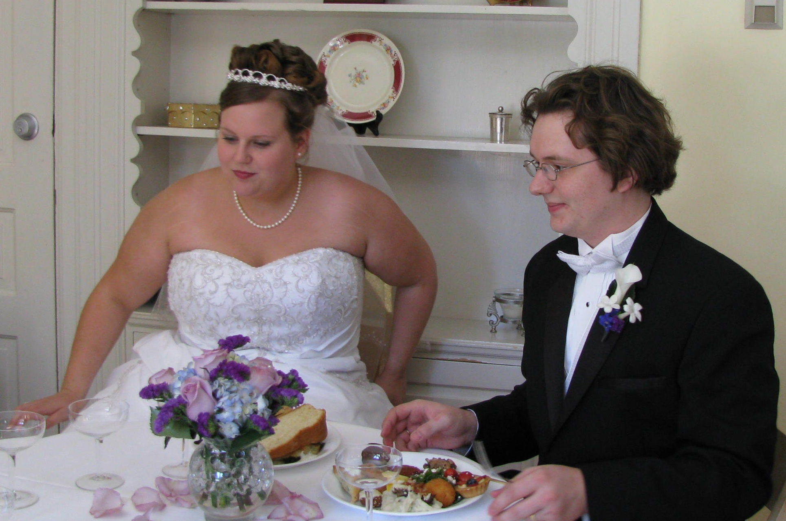
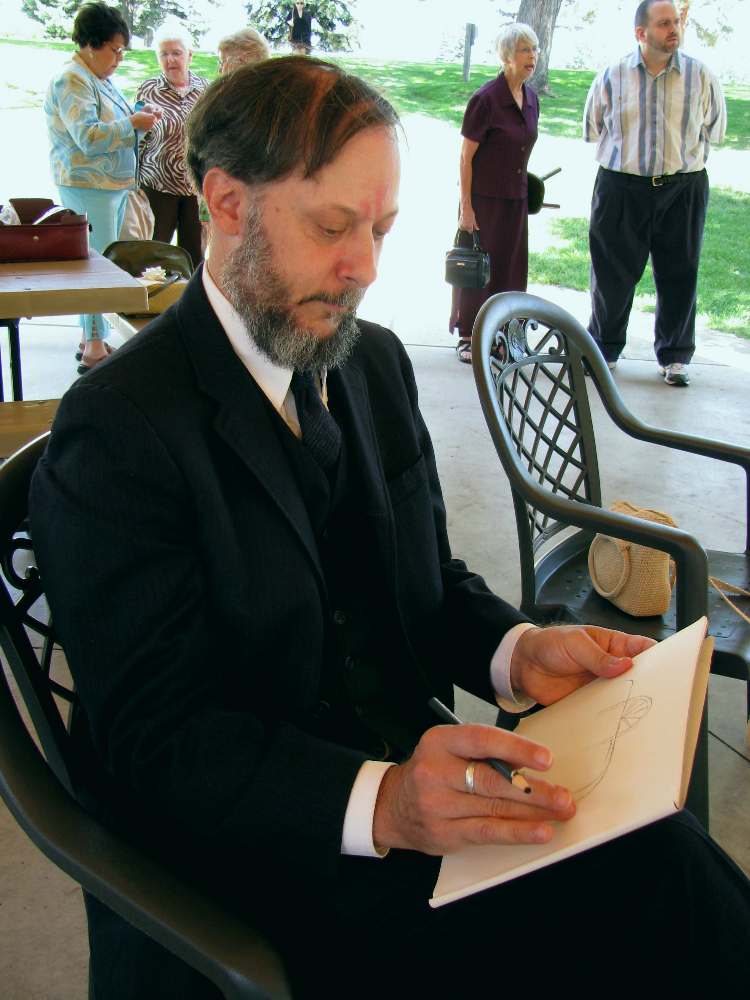
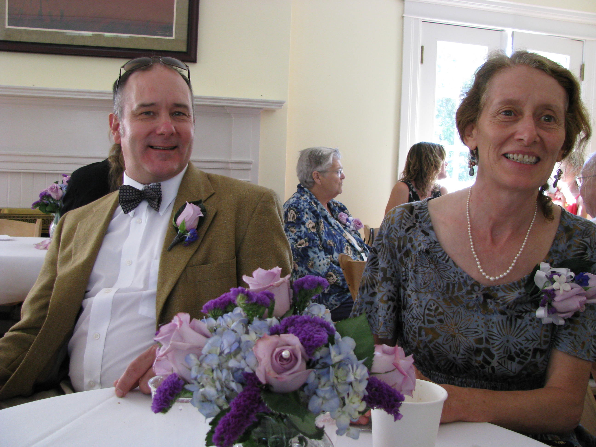
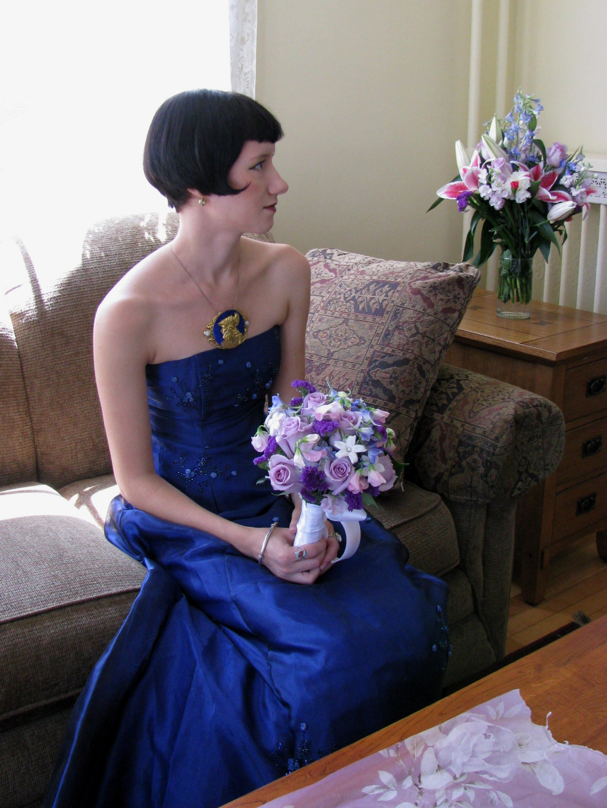
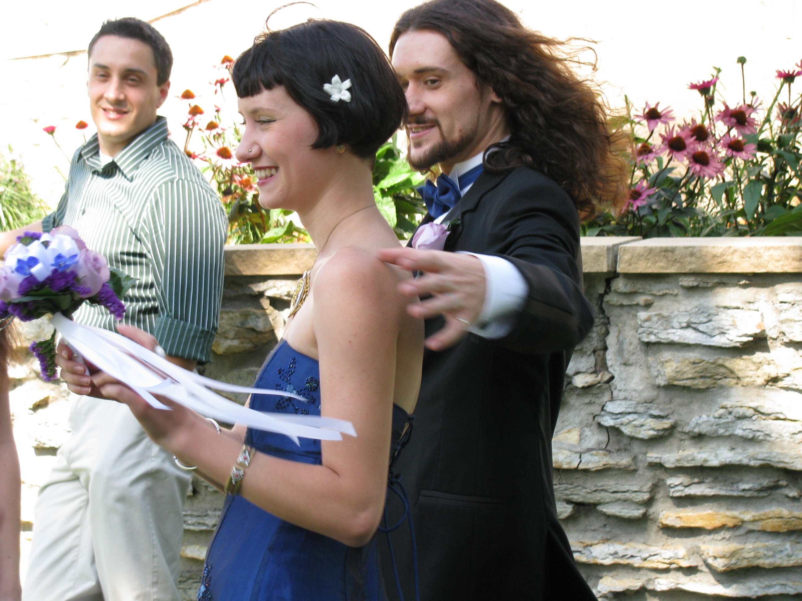
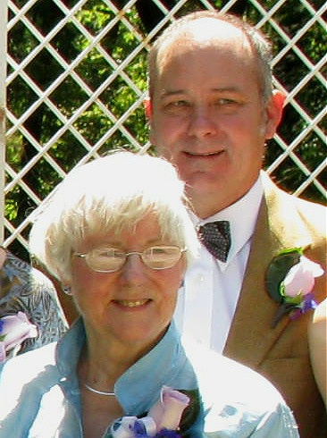

Our big excitement for the year was Albert and Jessica's wedding in Minneapolis. It was a beautiful, joyful occasion as you can see by the photos, with Rachel as bridesmaid and Earl as best man. (Rae caught the bridal bouquet!) Albert is head of the clarinet department at the Midwest Music |
Company. They buy, sell, repair and restore high-end instruments. Jess has a job in her field of chemistry with a pharmaceutical company and is a fine flautist as well. Rae is in her 3rd year at Naropa University where she's engrossed in Eastern arts. Earl and Sandy have been continuing with their painting and sculpture commissions at a home in Fairfield, Iowa. Mark, as Sustainable Living Coordinator at Maharishi University, has been instrumental in their receiving grants and other funding for the ongoing geothermal retrofitting of all the campus buildings; their first windmill is up and running and the Sustainable Living Department has seen an enormous increase in students. He retrofitted his own house as well, with a geothermal system and "outsulation" (over the sides and roof before re-shingling.) John is doing his arts and music; his big thrill of the year is a CD of his shapenote singing group recorded in an antique chapel. His house got a new roof with the help of parents, brother Mark and friends. Dave (still GM at the shipyard) and Tamora continue to play many gigs and Tamora has lots of fiddle students. She also is taking a course to become certified as a Master Gardener. |
Nathaniel was again first mate on theValora, on cruises out of Martha's Vineyard, while Abe was assistant director of a camp on Whitehead Island. Happy 2010 to all! |